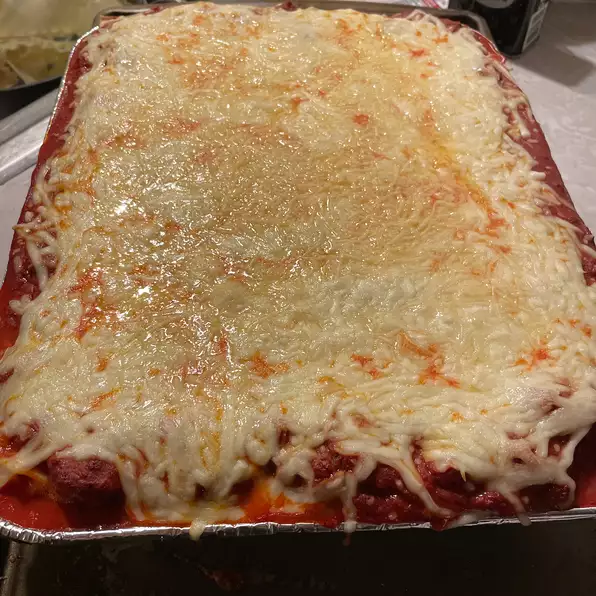

Lasagna

Recipe for a gorgeous lasagna dish that's perfect for evenings at home
This lasagna dish is the perfect complement to a quiet eveing at home. The sauce is plentiful and the cheese just melts
the family together
Follow this simple recipe that will EASILY have you family/friends wanting more while engrossed in great
conversation
INGREDIENTS
- 1 pound lean beef
- 1 onion, chopped
- 2 (6 ounce) cans tomato paste
- 1 (14.5 ounce) can of crushed tomatoes
- 2 cups water
- 1 tablespoon dried oregano
- 2 teaspoons garlic powder
- 2 teaspoons salt
- 1/4 teaspon ground black pepper
- 1 tablespoon while sugar
- 12 ounces cottage cheese
- 1/2 cup grated Parmesan cheese
- 1 egg
- 9 lasagna noodles
- 1 pound of shredded mozzarella cheese
STEPS
- In a large pot over medium heat, cook beef until brown. Drain off all fat. Add onion and cook until translucent.
Add tomato paste, crushed tomatoes, water, oregano, garlic powder, salt, peeper, and sugar. Stir until cobined and
and cook over medium heat util boiling. Reduce heat to low and simmer for 1 hour
- While sauce is simmering, blend cottage cheese, Parmesan cheese, and egg until smooth. Set aside
- Preheat over to 350 degrees F (175 degrees C)
- Spread 1 cup of sauce in the bottom of a 9x13-inch baking dish. Cover sauce with 3 noodles.
Cover noodle with 1/3 remaining sauce. Top with 1/2 of the mozzarella. Place another layer of noodles
and one of the sauce over the mozzarella; top that with the cottage cheese mixture. Top with remaining 3
noodles and remaining sauce
- Bake in preheated oven for 30 minutes. Sprinkle remaining mozzarella on top and bake 15 minutes more,
until golden and bubbly
Return To Main
Return To Top